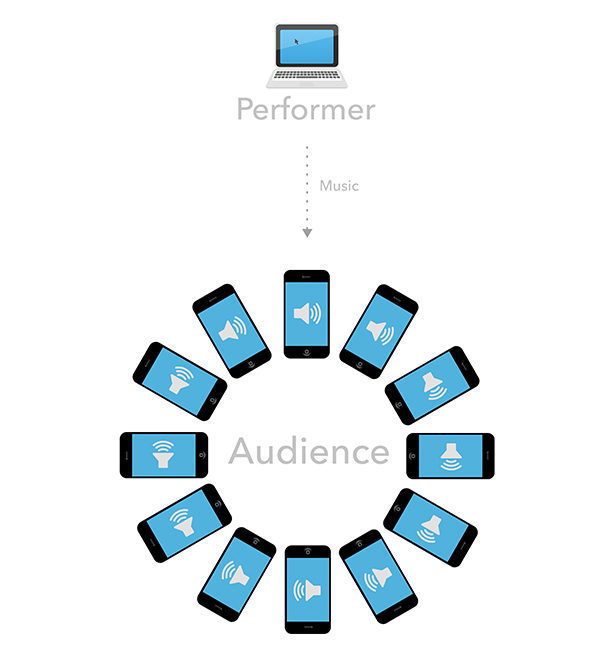
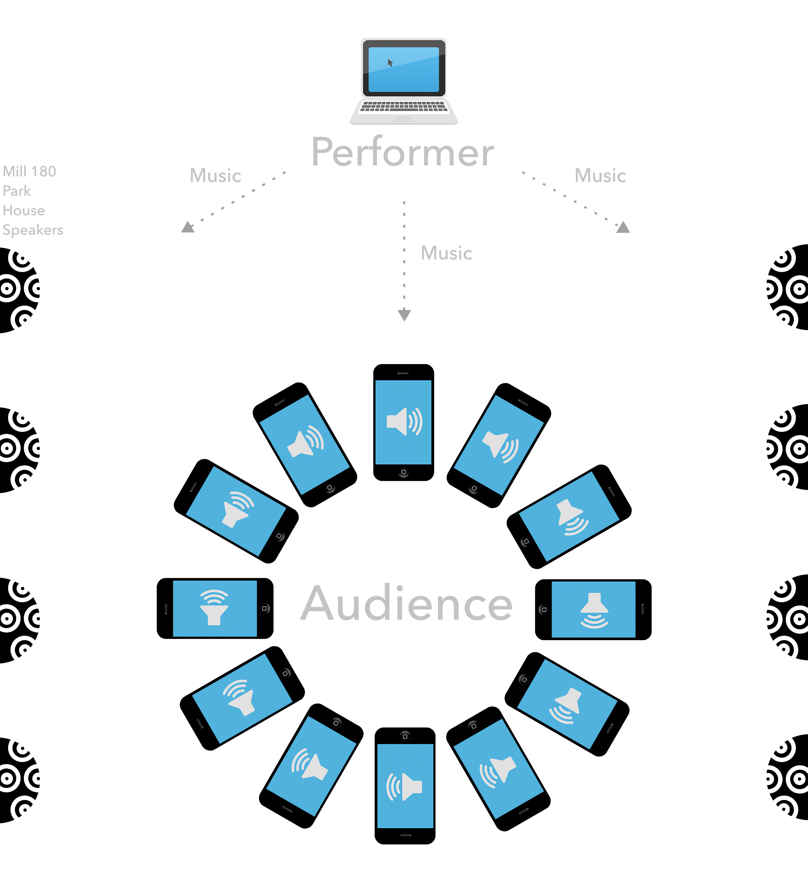

A performer uses a laptop to send musical instructions to audience phones through WiFi. These instructions initiate sounds on each phone's speaker.
Each phone makes its own independent sound, like being one violin in a symphony.
The performance runs in a mobile web browser so there is no need to download an app.

The Potential of Mill 180 Park
In Mill 180 Park, sound could be mixed between audience devices and the park's own mutli-channel speaker system, creating a truly immersive sound experience.

What my music sounds like
"Probably Dreams" (excerpt, 2015), computer-controlled piano